Send Apple Card transactions to Lunch Money
WalletFeed sends your Apple Card, Apple Cash and Savings transactions from your iPhone to Lunch Money. You make an access token in Lunch Money, then you paste the token in WalletFeed.
Download WalletFeed on the App Store
Before you start
You must have these items:
- An iPhone with iOS 26 or a newer version. WalletFeed is available only in the US.
- WalletFeed on your iPhone, with access to your Apple Card, Apple Cash or Savings account.
- WalletFeed Pro (a subscription with a 1-week free trial, or a one-time Lifetime purchase). You must have WalletFeed Pro to send transactions to Lunch Money.
- A Lunch Money account and its password. Lunch Money has a 30-day free trial, and you can start the trial without a payment card. You can make an access token during the trial.
Your access token stays on your iPhone
- WalletFeed keeps the access token in the Keychain on your iPhone. iOS encrypts the Keychain.
- The access token does not go to iCloud Keychain or to your other devices.
- WalletFeed has no account, and no WalletFeed server keeps the access token. No person at WalletFeed can see or get the access token.
- Your iPhone sends the access token only to Lunch Money, in each request to Lunch Money.
- When you delete the destination, WalletFeed deletes the access token from your iPhone. You can also delete the token in Lunch Money.
Step 1: Open the Lunch Money form in WalletFeed
-
On your iPhone, open WalletFeed.
-
Tap Destinations.
-
Tap + at the top of the screen.

-
Below Budgeting, tap Lunch Money.

-
If WalletFeed shows WalletFeed Pro, get WalletFeed Pro.
Result: After you get WalletFeed Pro, WalletFeed shows the Lunch Money form.
Step 2: Make an access token in Lunch Money
A Lunch Money access token gives access to all of the data in one budget. The token is for the budget that is open when you make the token. With the token, WalletFeed gets the list of your Lunch Money accounts and can make an Apple Card account. WalletFeed also adds, changes and deletes the transactions that it sends.
You can delete the token in Lunch Money (refer to Delete the token in Lunch Money). After you delete the token, WalletFeed cannot connect to Lunch Money with it.
To make the token on your iPhone, do these steps:
-
In the Lunch Money form, tap Open Developers.
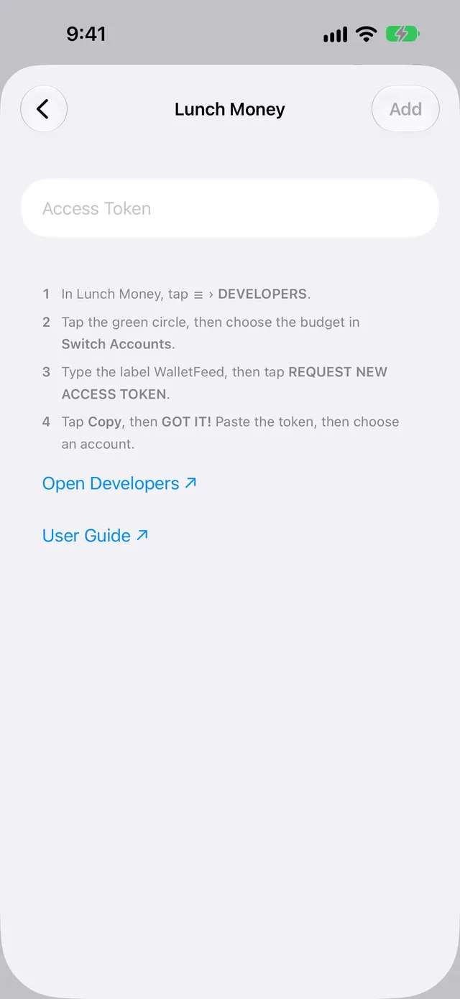
Result: Your web browser opens Lunch Money.
-
If Lunch Money shows "Welcome back!", get access to your Lunch Money account with your e-mail address and your password.
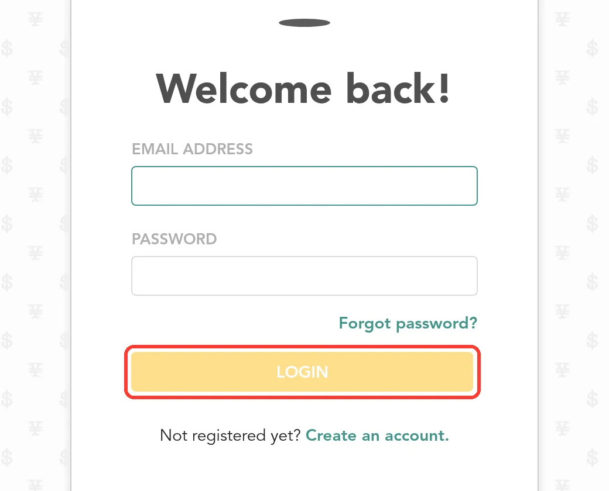
Result: Lunch Money shows Home. Lunch Money does not go back to the Developers page.
-
If Lunch Money does not show the Developers page, tap ☰ › DEVELOPERS.
The menu icon (☰) is at the top right of the page. In the menu, DEVELOPERS is below SETTINGS.
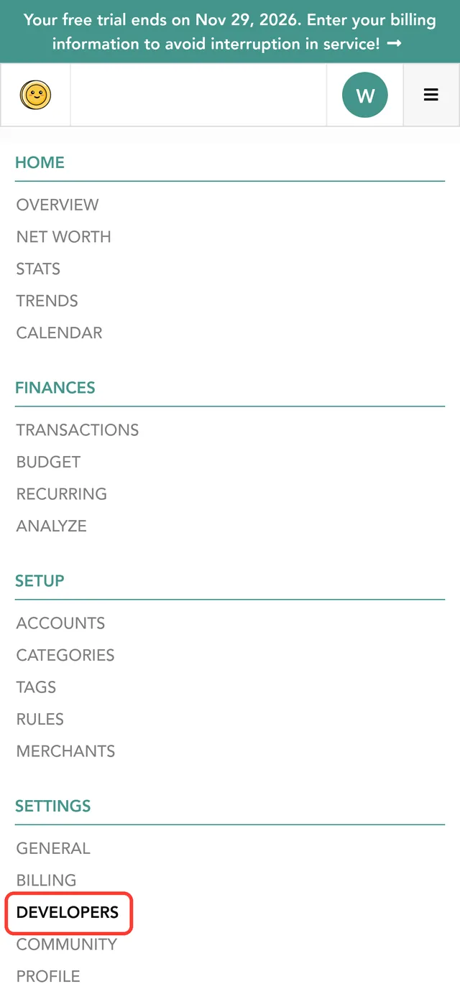
Result: Lunch Money shows the Developers page.
-
Tap the green circle at the top of the page.
The circle shows the first letter of the name of your budget. It is to the left of ☰.
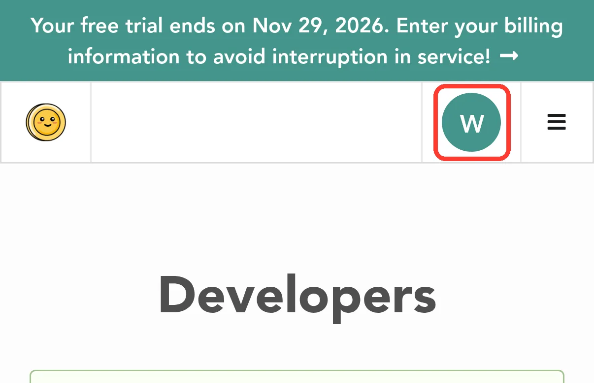
Result: Lunch Money shows Switch Accounts. The open budget has "(Current)" after its name.
-
If you have more than one budget, tap the budget for your transactions.
Above the list of budgets, Lunch Money shows Create new budget account. Do not tap it.
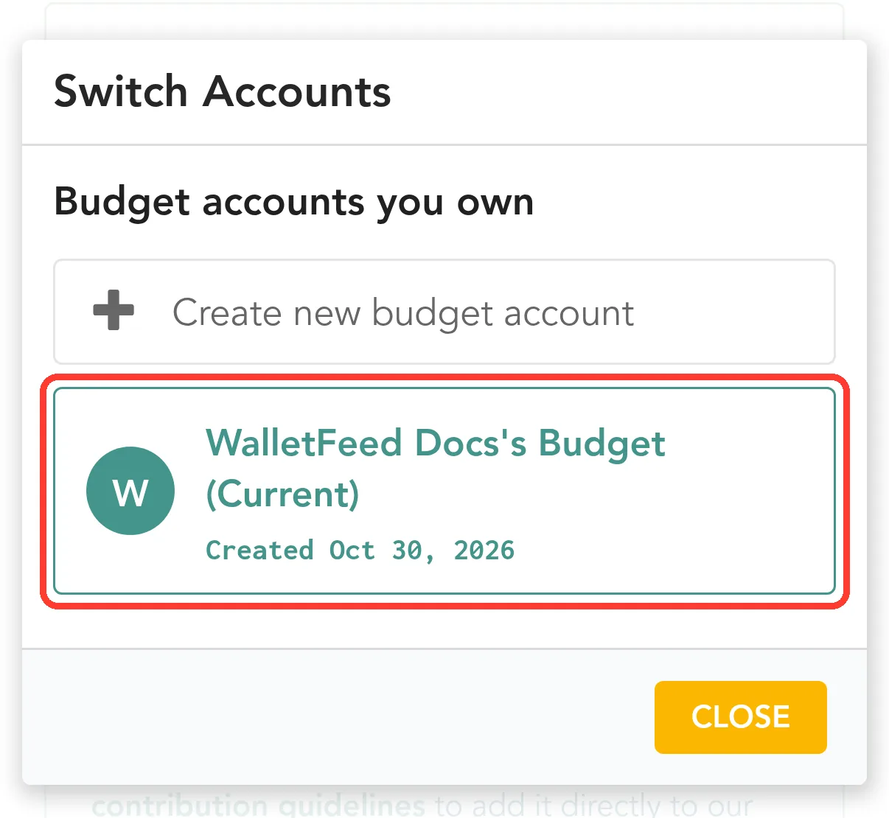
-
If you have only one budget, tap CLOSE.
-
Scroll to NEW ACCESS TOKEN.
Lunch Money shows NEW ACCESS TOKEN below the form "Submit your contribution to Lunch Money". Do not use that form. That form sends a project to Lunch Money and does not make a token.
-
In Label for access token (optional), type
WalletFeed.The label helps you find the WalletFeed token in ACTIVE ACCESS TOKENS. It is not necessary to select an item in What will you use this API key for? (optional).
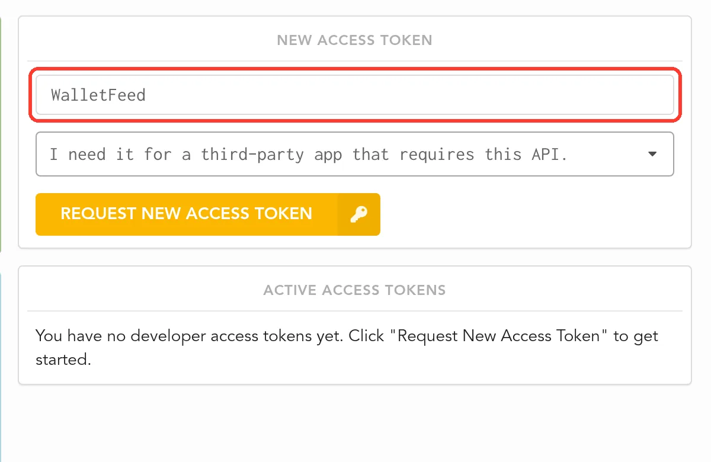
-
Tap REQUEST NEW ACCESS TOKEN.
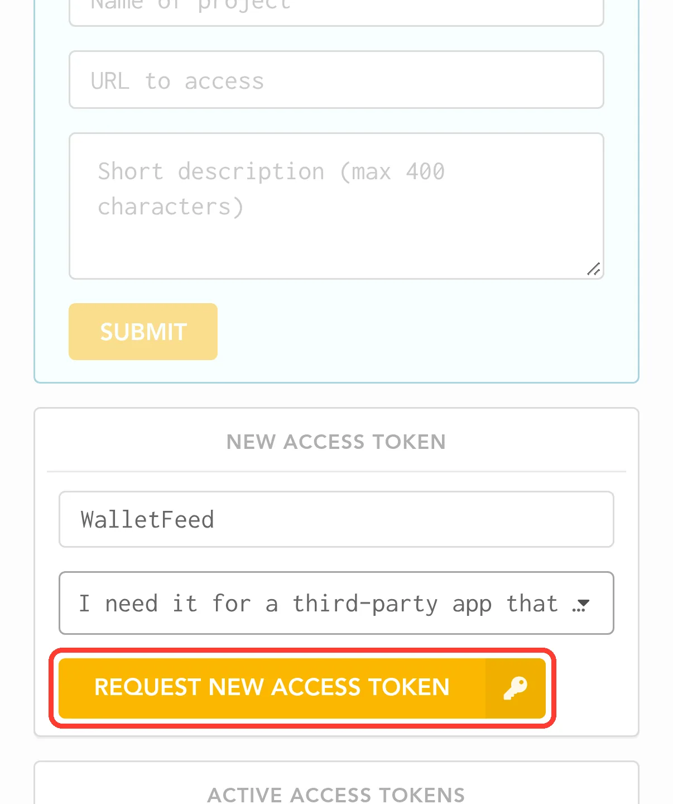
Result: Lunch Money shows the token in a box. Above the box, Lunch Money shows "This is your access token. Please save it now as this is the only time it will be shown to you!"
-
In the box with the token, tap Copy.
Lunch Money shows Copy in small text at the right end of the box.
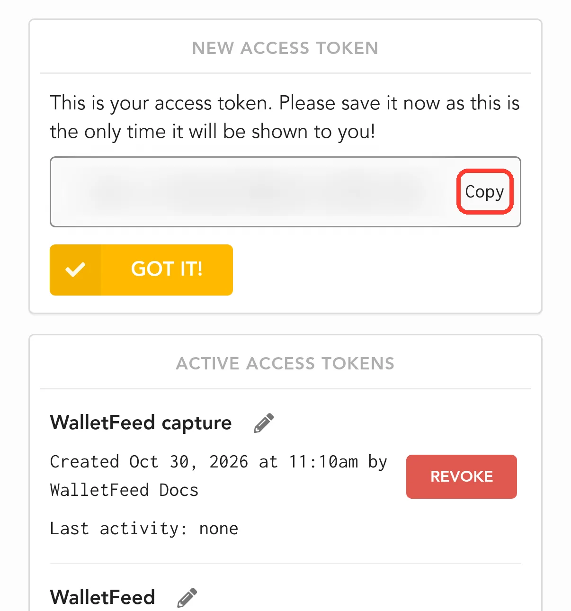
Result: Copy changes to Copied!.
-
Tap GOT IT!.
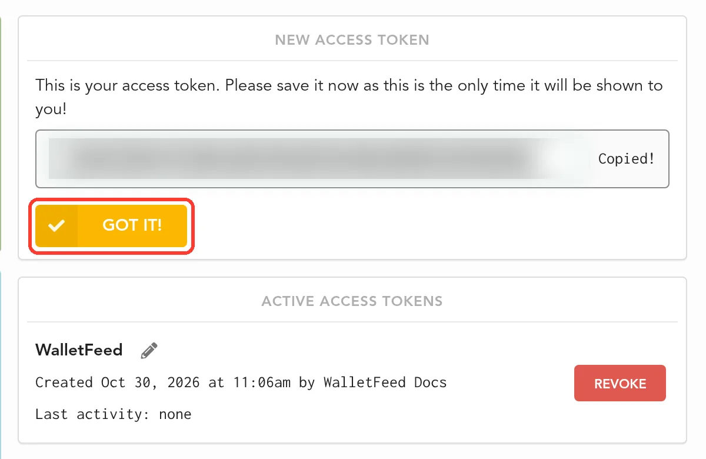
Result: Lunch Money closes the box. ACTIVE ACCESS TOKENS shows the WalletFeed token.
Step 3: Paste the token in WalletFeed
-
Open WalletFeed again.
-
If WalletFeed does not show the Lunch Money form, do Step 1 again.
-
Touch and hold Access Token.
-
Tap Paste.
Result: WalletFeed connects to Lunch Money with the token. Then WalletFeed shows Account.
-
In Account, select the Lunch Money account for your transactions.
If your budget has an account with the name Apple Card, WalletFeed selects that account. The list then does not show New Apple Card Account.
If your budget has no account with that name, WalletFeed selects New Apple Card Account. With New Apple Card Account, WalletFeed makes a credit account with the name Apple Card. Its balance is $0.00.
The list does not show closed accounts or accounts that cannot have transactions.
-
Tap Add.
Result: WalletFeed shows Send Transactions to Lunch Money? The message tells you the data that Lunch Money receives, the Wallet accounts and the start date. If you tap Cancel, WalletFeed removes the new destination and does not send transactions.
After Cancel, the Lunch Money form stays open. If WalletFeed made the Apple Card account, Account shows that account. When you tap Add again, WalletFeed does not make a second account.
-
Tap Send.
Result: WalletFeed starts to send your transactions to Lunch Money. In Destinations, the name of the new destination starts with "Lunch Money".
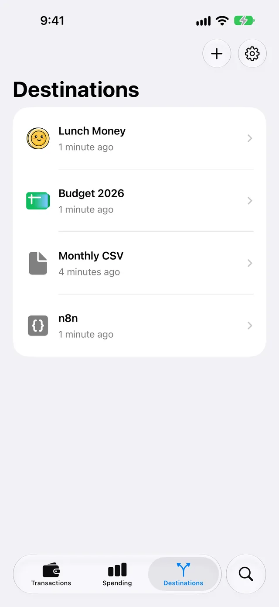
Data that Lunch Money receives
Lunch Money shows the transactions from WalletFeed on the TRANSACTIONS page, below FINANCES.
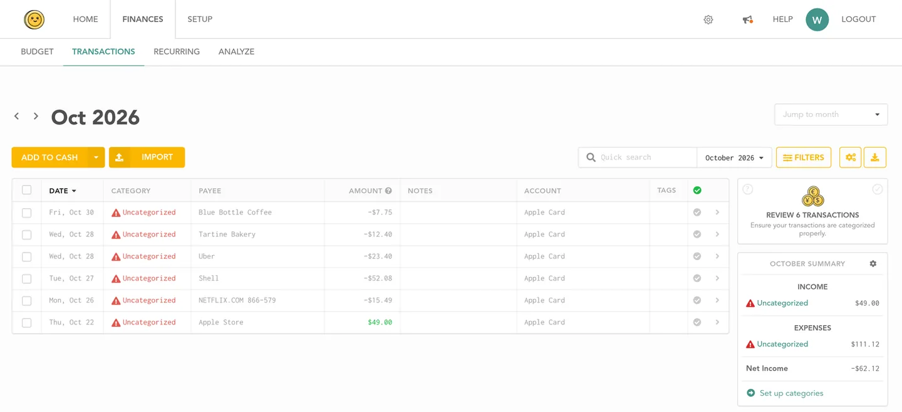
WalletFeed adds each transaction to the Lunch Money account that you selected. This account also receives the transactions from your other Wallet accounts, for example Apple Cash. To select the Wallet accounts, refer to Send only some transactions.
| From Wallet | In Lunch Money |
|---|---|
| The date of the transaction, in the time zone of your iPhone | DATE |
| The merchant name, or the description if there is no merchant name | PAYEE |
| The card statement text | Original payee name |
| The amount | AMOUNT |
| The currency | Currency |
| The ID of the transaction in Wallet | External ID |
| Wallet status, transaction type, merchant category code, WalletFeed category, description, account name, posted date, and for a purchase abroad the value, currency and exchange rate | Custom metadata |
| The WalletFeed category, if you have a category with the same name | Category, only for a new transaction |
Lunch Money shows a purchase with a minus sign, for example -$7.75. It shows a refund in green, for example $49.00. A payment to your card also goes to Lunch Money as money in.
WalletFeed uses the external ID to find the transaction again when the transaction changes. Apps that use the Lunch Money API can read the custom metadata.
If you have a category with the same name as the WalletFeed category, WalletFeed sets it on a new transaction. For example, Dining or Restaurants. Lunch Money also uses your rules on each new transaction. Thus, a rule can set a different category. Lunch Money shows each new transaction as unreviewed.
After WalletFeed adds a transaction, WalletFeed does not change the payee, category, notes, tags or review status. When the date, amount, currency or custom metadata changes in Wallet, WalletFeed makes the same change in Lunch Money.
If you change the date, the amount or the currency of a transaction in Lunch Money, WalletFeed replaces your change with the data from Wallet. This occurs each time that WalletFeed sends the transaction again. For example, WalletFeed sends a transaction again when the charge posts, or when you use Send History.
If WalletFeed makes the Apple Card account, the account starts with a balance of $0.00. When WalletFeed adds, changes or deletes a transaction, the balance of the account does not change. WalletFeed does not know the balance of your card. To change the balance, refer to If the balance in Lunch Money is not correct.
Your transactions go from your iPhone directly to Lunch Money. WalletFeed has no account, and no WalletFeed server keeps your transactions or keys. After Lunch Money receives your transactions, the terms of Lunch Money are applicable to them.
New and changed transactions
While WalletFeed is open, Lunch Money receives changes in seconds. When WalletFeed is not open, iOS starts WalletFeed approximately 1 hour or less after a change in Wallet. If Background Sync is on in Settings › Sync, WalletFeed then sends the change.
Wallet shows a new charge as pending until the charge posts. Lunch Money does not show a pending status for transactions from WalletFeed. Thus, Lunch Money shows a pending charge as a usual transaction. WalletFeed sends the Wallet status in the custom metadata.
When the charge posts, WalletFeed uses the same transaction in Lunch Money. If the amount or the date changes, WalletFeed changes the transaction in Lunch Money. To send charges only after they post, you can set Filter to on and Include Pending to off (refer to Send only some transactions).
Lunch Money receives a refund as a different transaction. If Wallet shows a charge as declined or expired, WalletFeed deletes the charge from Lunch Money. WalletFeed also deletes a transaction that Wallet removes. When WalletFeed deletes a transaction, the balance of the account does not change. But WalletFeed does not delete a transaction that you divided or put in a group in Lunch Money.
Send previous transactions
A new destination also receives previous transactions from the start date in Settings › Sync › Initial History. Initial History is All until you change it. If you change Initial History before you add Lunch Money, the new destination receives transactions from the new start date.
To send previous transactions after you add Lunch Money, do these steps:
-
In Destinations, tap the Lunch Money destination.

-
Tap Send History.
-
Tap 30 Days, 90 Days, 1 Year or All.
Result: WalletFeed shows Sending History and the number of transactions that it sent.
-
To stop WalletFeed before it sends all of the transactions, tap Send History › Stop Sending.
WalletFeed sends previous transactions to Lunch Money in groups of 50. It waits 45 seconds between groups. Lunch Money does not receive the same transaction two times. If you changed the date, the amount or the currency of a transaction in Lunch Money, Send History replaces your change with the data from Wallet.
For more information, refer to Send previous transactions.
Change or remove the destination
You change the Lunch Money destination on its screen in Destinations. For more information about this screen, refer to Destinations.
Send only some transactions
- In Destinations, tap the Lunch Money destination.
- Set Filter to on.
- Set the filter controls (refer to the table).
| Control | Result |
|---|---|
| Include | WalletFeed sends all transactions, only purchases or only credits. |
| Minimum | WalletFeed sends only transactions of this amount or more. |
| Include Pending | If Include Pending is off, WalletFeed sends charges only after they post. |
| Accounts | WalletFeed sends only transactions from the Wallet accounts that you select. |
| Categories | WalletFeed sends only transactions in the categories that you select. |
| Exclude | WalletFeed does not send transactions from the merchants that you type. You must type a comma between two merchants. |
If Apple Intelligence is active, you can also type a rule in words:
- In the field that shows "Travel over $50, not Uber", type the rule.
- Tap the Apple Intelligence icon at the end of the field.
WalletFeed uses the filter only for the transactions that it sends after you set the filter. For more information, refer to Filter the transactions for a destination.
Stop the destination for a time
-
In Destinations, tap the Lunch Money destination.
-
Set Enabled to off.
Until you set Enabled to on again, WalletFeed does not send transactions to Lunch Money.
Replace the token
If you deleted the token in Lunch Money, or if Lunch Money does not accept the token, do these steps:
-
Make a new access token for the same budget (refer to Step 2).
If the new token is for a different budget, WalletFeed cannot get access to the account.
-
Open WalletFeed again.
-
In Destinations, tap the Lunch Money destination.
-
Tap Replace Token.
-
Touch and hold Access Token.
-
Tap Paste.
-
Tap Replace.
Result: Before WalletFeed puts the new token in the Keychain, WalletFeed connects to Lunch Money with the token. Then Replace Token shows a green checkmark.
Remove Lunch Money from WalletFeed
-
In Destinations, tap the Lunch Money destination.
-
Tap Delete.
-
Tap Delete again.
Result: WalletFeed removes the destination and deletes the token from your iPhone. The transactions that WalletFeed sent stay in Lunch Money. Until you delete the token in Lunch Money, Lunch Money accepts the token.
Delete the token in Lunch Money
-
On your iPhone, open the Lunch Money Developers page.
-
If Lunch Money shows "Welcome back!", get access to your Lunch Money account with your e-mail address and your password.
-
If Lunch Money does not show the Developers page, tap ☰ › DEVELOPERS.
-
In ACTIVE ACCESS TOKENS, find the row for WalletFeed.
Each row shows the label of the token and "Last activity". After WalletFeed uses the token, "Last activity" shows a date and a time.
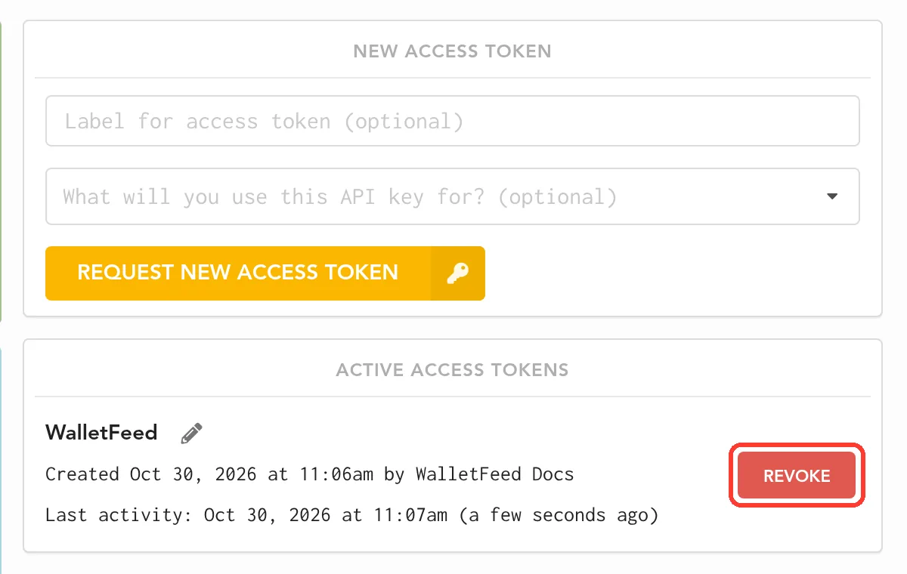
-
In the row for WalletFeed, tap REVOKE.
Result: Lunch Money does not show a message before it deletes the token. Then Lunch Money shows "Successfully revoked token".
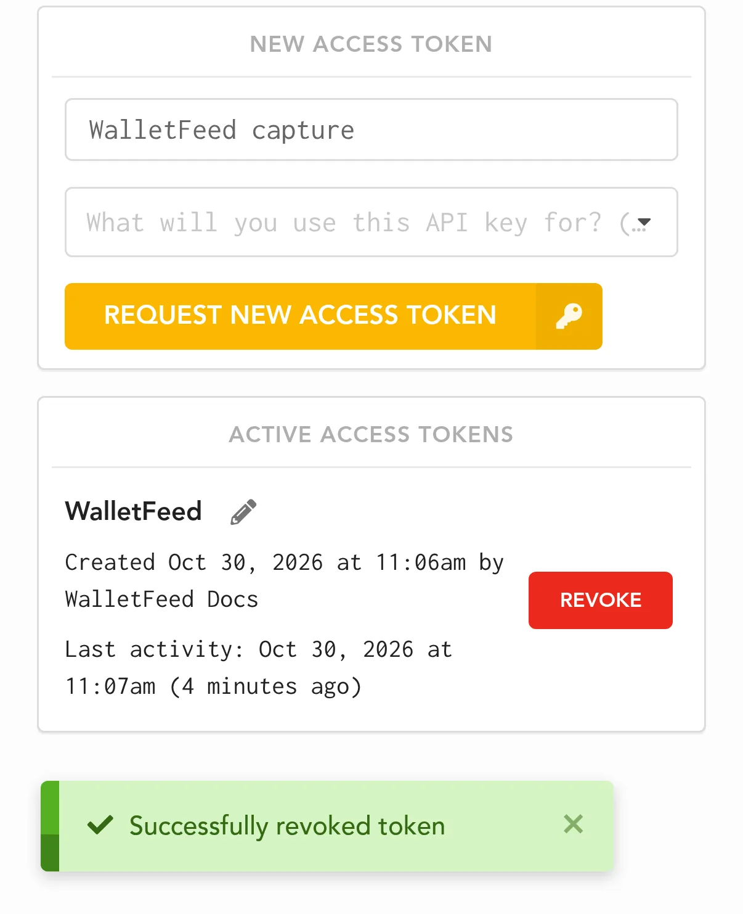
After you delete the token, the Lunch Money destination in WalletFeed shows "Authentication failed" when WalletFeed tries to send transactions. To send transactions again, you must make a new token and replace the token in WalletFeed.
If there is a problem
To make sure that WalletFeed can send transactions to Lunch Money, do these steps:
-
In Destinations, tap the Lunch Money destination.
-
Tap Send Test.
Result: If Lunch Money receives the test transaction, WalletFeed shows a green checkmark.
If WalletFeed shows "Token rejected (HTTP 401)"
Lunch Money does not accept the token, for example because you copied only a part of the token. WalletFeed then shows "Token rejected (HTTP 401). Request a new one in Lunch Money."
- Make a new access token in Lunch Money (refer to Step 2).
- Open WalletFeed again.
- Touch and hold Access Token.
- Tap Paste.
If the destination shows "Authentication failed"
Lunch Money does not accept the token of the destination, for example because a person deleted the token in Lunch Money. While WalletFeed sends previous transactions, the destination also shows "Authentication failed. Replace the token."
- Make a new access token in Lunch Money (refer to Step 2).
- Replace the token in WalletFeed (refer to Replace the token).
If you did not copy the token
Lunch Money shows a token only one time.
- In Lunch Money, open the Developers page again (refer to Step 2).
- In the row for the token that you did not copy, tap REVOKE.
- Make a new access token (refer to Step 2).
If WalletFeed shows "The account is gone from Lunch Money"
Lunch Money does not have the account for this destination. For example, a person removed the account in Lunch Money, or the token is for a different budget. The destination and Replace Token then show "The account is gone from Lunch Money. Add this destination again."
- Remove the destination (refer to Remove Lunch Money from WalletFeed).
- Add Lunch Money again (refer to Step 1).
If the transactions go to an incorrect budget
The token is for the budget that was open when you made the token.
-
Remove the destination (refer to Remove Lunch Money from WalletFeed).
-
Do Step 1, Step 2 and Step 3 again.
In Step 2, tap the correct budget in Switch Accounts before you make the token.
The transactions in the incorrect budget stay there. You can delete them in Lunch Money.
If Lunch Money does not receive new transactions
WalletFeed cannot send transactions to Lunch Money. For example, the destination is off, or Background Sync is off.
- Open WalletFeed. While WalletFeed is open, it sends changes in seconds.
- If Destinations shows Sync Requires Pro, tap Upgrade.
- If the Lunch Money destination shows Off, set Enabled to on in the destination.
- If Filter is on, make sure that the filter includes the new transactions.
- Tap the gear icon at the top of Destinations.
- Make sure that Background Sync is on.
- Tap Sync Now.
After your iPhone starts again, WalletFeed cannot send transactions to destinations until you type your passcode one time.
If the balance in Lunch Money is not correct
WalletFeed does not know the balance of your card, and WalletFeed does not change the balance of the account. Lunch Money changes the balance when you add, change or delete a transaction in Lunch Money. Before version 1.1, WalletFeed also changed the balance when it deleted a transaction.
-
On a computer, open Lunch Money in a web browser.
-
Click SETUP at the top of the page.
Result: Lunch Money shows Accounts.
-
Click the account that receives your transactions, for example Apple Card.
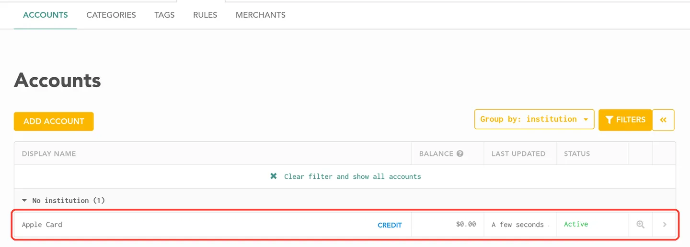
Result: Lunch Money shows Edit Account.
-
In CURRENT BALANCE, type the correct balance.
-
Click SAVE CHANGES.
If the destination shows "Too many requests"
Lunch Money accepts a maximum of 100 requests each minute.
-
Wait until WalletFeed tries again.
Result: WalletFeed tries again at the time that it shows, or when it starts to send changes again.
 Scan with your iPhone
Scan with your iPhone
Related
Updated November 16, 2026